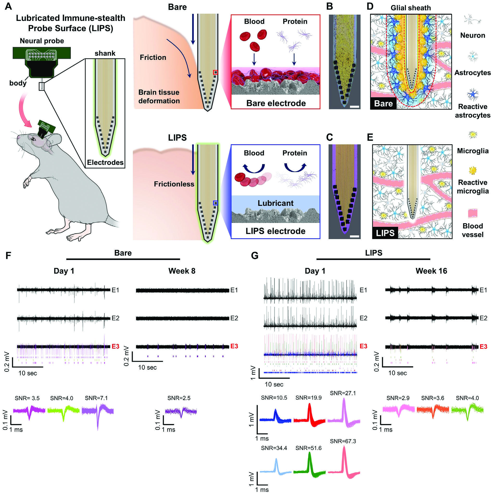

연구 배경과 분류
공개 본문에서 삽입 마찰·부착·임피던스를 함께 검토하여 장치–숙주 반응 경계가 직접 확인된다.
연구 배경
신경 탐침은 삽입할 때의 손상과 이후 표면 부착을 모두 다뤄야 합니다. LIPS는 윤활 계면으로 마찰과 생물학적 부착을 함께 줄이려는 접근입니다. 삽입 순간의 기계적 손상과 이후 세포·단백질 부착은 서로 다른 시간대에 기록을 방해할 수 있습니다. 이 때문에 표면의 미끄러움만 확인하는 것보다 삽입 평가, 오염 시험과 실제 기록을 연결할 필요가 있습니다.
핵심 접근과 발전
윤활층은 전극 임피던스를 높일 수 있어 Pt black의 표면적 증가를 결합합니다. 따라서 기록 성능은 윤활 효과와 전극 설계를 함께 봐야 합니다. 표면의 마찰을 줄이는 층이 동시에 전극 접촉을 방해할 수 있다는 점이 핵심 상충입니다. Pt black을 이용한 전극 설계는 그 전기적 부담을 완화하려는 요소이므로, 코팅의 생물학적 효과만으로 신호 개선 전체를 설명하지 않습니다.

LIPS 코팅 탐침의 마찰·오염 완화 개념과 대조 탐침의 대표 신경 신호 기록입니다.
Yeontaek Lee, Hyogeun Shin, Dongwon Lee 외. “A Lubricated Nonimmunogenic Neural Probe for Acute Insertion Trauma Minimization and Long‐Term Signal Recording”. Figure 1. DOI: 10.1002/advs.202100231. CC BY 4.0. PDF의 CMYK 그림을 pypdf로 해석하고 JPEG로 재인코딩한 검증된 추출본입니다. 해당 추출본은 추가 변경 없이 복사했습니다. 크기·패널·레이블 변경은 없으며 원시 JPEG와 바이트·픽셀 무변경을 주장하지 않습니다.
평가 방법과 조건
장기 비교는 마취 생쥐의 주간 기록과 조직 면역염색입니다. 기록 분석은 분리된 신경 신호를 포함하므로 신호 수와 동물 수를 혼동하지 않습니다. 기록은 움직임에 따른 잡음을 줄인 마취 조건에서 수행했고, 신호 분류와 검출 종료 기준도 실험 절에 제시됩니다. 면역염색은 탐침 주변의 조직 반응을 다른 방식으로 확인하므로 전기 신호와 조직 표지를 나란히 읽되 표본 단위를 합치지 않습니다.
주요 결과
코팅 탐침은 비교군보다 오래 신호가 관찰되고 주변 면역 표지 발현도 낮았습니다. 두 관찰은 해당 시험에서의 일치이며 모든 신호 감소 원인을 분리한 증명은 아닙니다. 면역 표지 감소와 기록 유지가 같은 방향으로 나타나는 것은 표면 설계의 해석을 뒷받침합니다. 그러나 기록 변화에는 접촉 임피던스와 분석 조건도 관여하므로, 이 결과만으로 면역 반응이 유일한 원인이라고 결론 내리지 않습니다.
한계와 남은 질문
저자도 코팅의 임피던스 증가와 동적 환경의 윤활액 유지를 과제로 남깁니다. 마취·분류·종료 기준이 다른 기록의 수명과 직접 비교하지 않습니다. 특히 검출 가능한 신호가 더 오래 남았다는 결과는 모든 전극이 같은 품질로 계속 작동했다는 뜻이 아닙니다. 연구가 남긴 선택적 코팅과 윤활액 보유 과제는 마찰 억제와 전기 접촉을 더 독립적으로 조절해야 함을 보여 줍니다.
관련 외부 연구
Foreign body reaction to biomaterials
DOI: 10.1016/j.smim.2007.11.004 ↗
외부 리뷰 초록은 단백질 흡착부터 이물세포 반응까지 정리한다. LIPS는 이 과정의 표면 부착·삽입 손상을 겨냥한다.
일반 기전 리뷰가 신경 기록의 장기 성능을 입증하지 않는다.
초록 확인교신저자 확인
서정목 교신 확인아래는 서정목의 교신저자 여부에 관한 확인 기록입니다. 저자 순서나 별표만으로 판정하지 않으며, 본문 내용 검증과 별도로 읽어야 합니다.
- 교신 고지 확인 출처 ↗
Corresponding author.
contrib/xref author-notes for Cho and Seo; author-notes correspondence footnote · public_repository_xml_author_and_correspondence_read
- 본문 확인 범위
- 앞서 출판사 본문의 서론과 §§2.1–2.3에서 표면·전극·삽입 평가를 읽었습니다. 추가로 Europe PMC XML의 §§2.6–2.8, Figure 5 전체 캡션, §3 Discussion, Experimental Section의 동물 준비·수술, 전기생리 기록·신호 분석 및 통계 분석을 읽었습니다. §§2.4–2.5는 이번 단계에서 새로 검토한 범위가 아닙니다.
- 보충자료 확인 범위
- 보충자료(SI)는 읽지 않았습니다. 확인된 보충자료 범위는 비어 있으며, SI 전체 검토를 완료한 것으로 표시하지 않습니다.
- 남은 확인
- SI 원자료·전체 전극 패널·동물 수준 재분석은 검토하지 않았습니다. 읽은 기록 조건을 자유 행동 성능이나 임상 수명으로 확대하지 않습니다.
COVERAGE & OUTREACH
보도와 소개
논문과의 연관성을 확인한 소개 자료입니다. 언론 게재는 독립 취재나 실험 결과의 추가 검증을 뜻하지 않습니다.
"인체삽입 의료기기 수명 4배 이상 늘리는 코팅기술 개발" ↗
조일주·서정목 연구팀, 윤활 코팅 신경 탐침, 생쥐 뇌의 장기 신호 기록 및 Advanced Science 발표를 대조해 #59로 연결했습니다.
본문 확인 기사 본문과 2021-07-11 게시 날짜를 읽었습니다. KIST 발표 기반 보도이며 제목의 ‘4배’ 표현을 독립적인 임상 효과로 해석하지 않습니다.
A Lubricated Nonimmunogenic Neural Probe for Acute Insertion Trauma Minimization and Long-Term Signal Recording (Adv. Sci. 15/2021) ↗
Back Cover 소개의 제목·저자 및 원 연구 번호 2100231이 #59와 일치합니다.
본문 확인 별도 표지 소개와 목차의 LIPS 설명, 2021-08-04 날짜를 읽었습니다. 원 연구 랜딩 페이지와 구분했습니다.
BLISS 이연택 학생 Advanced Science에 논문 게재 & Back cover 선정 ↗
이연택·Advanced Science 공지 이미지의 LIPS 신경 탐침과 장기 기록 설명이 #59에 해당합니다. Wiley 표지 소개에서도 원 연구를 확인했습니다.
본문 확인 공개 뉴스 JSON의 제목·날짜와 연결된 이미지 본문을 직접 읽었습니다(공지 키: ytgrats-2-3). 연구실 자체 홍보이며 이미지는 재배포하지 않습니다.
미확인 후보와 접근 제한 (2)
미확인 후보 · 인체 삽입형 의료기기 코팅기술 개발, 의료기기 수명연장과 안정성을 동시에 확보 ↗
검색 결과의 연구자·신경 탐침 코팅 내용은 #59와 부합합니다. 기관 원문을 읽지 못해 후보로 유지했습니다.
본문 접근 제한 웹 열기에 실패했고 공개 HTTP 조회도 400을 반환했습니다. 검색 내용은 실제 본문 열람으로 승격하지 않았습니다.
미확인 후보 · A new coating extends the lifespan of brain implants ↗
검색 결과에 #59의 DOI와 원 보도자료를 각색했다는 표시가 있습니다.
본문 접근 제한 직접 열기는 403으로 차단됐습니다. 제목·DOI·보도자료 각색 표시는 검색 결과 수준이며, 날짜도 본문에서 확인하지 못했습니다.
근거와 확인 범위
앞서 출판사 본문의 서론과 §§2.1–2.3에서 표면·전극·삽입 평가를 읽었습니다. 추가로 Europe PMC XML의 §§2.6–2.8, Figure 5 전체 캡션, §3 Discussion, Experimental Section의 동물 준비·수술, 전기생리 기록·신호 분석 및 통계 분석을 읽었습니다. §§2.4–2.5는 이번 단계에서 새로 검토한 범위가 아닙니다.
추가 해설은 아래에 명시한 근거 범위에서 편집 검토를 승인한 내용입니다. 모든 본문·보충자료의 검증 완료를 뜻하지 않습니다.
- 추가 본문 확인 범위
- 앞서 출판사 본문의 서론과 §§2.1–2.3에서 표면·전극·삽입 평가를 읽었습니다. 추가로 Europe PMC XML의 §§2.6–2.8, Figure 5 전체 캡션, §3 Discussion, Experimental Section의 동물 준비·수술, 전기생리 기록·신호 분석 및 통계 분석을 읽었습니다. §§2.4–2.5는 이번 단계에서 새로 검토한 범위가 아닙니다.
- 추가 보충자료 확인 범위
- 보충자료(SI)는 읽지 않았습니다. 확인된 보충자료 범위는 비어 있으며, SI 전체 검토를 완료한 것으로 표시하지 않습니다.
- 원본 공개 논문 목록 ↗ · #59 · 2026-10-03
- Crossref metadata ↗: Crossref에 등록된 공개 서지 메타데이터만 확인했습니다. 출판사 페이지·초록·본문을 읽었다는 뜻이 아니며, 학교 Chrome 전문 검증은 보류입니다. license_urls는 등록된 링크 목록이며 본문·그림 재배포 허가를 의미하지 않습니다. TDM 또는 게시 정책 링크가 포함될 수 있습니다.
- A Lubricated Nonimmunogenic Neural Probe for Acute Insertion Trauma Minimization and Long‐Term Signal Recording ↗
public_web_full_text · Abstract; Introduction; Results §§2.1–2.3; no complete supplement audit. Checked 2026-10-03. - A Lubricated Nonimmunogenic Neural Probe for Acute Insertion Trauma Minimization and Long‐Term Signal Recording ↗
public_repository_full_text · §2.7; Figure 5 caption (sorted neural cells versus analyzed images); Experimental Section: Animal Preparation and Surgery, Electrophysiological Recording and Signal Analysis - A Lubricated Nonimmunogenic Neural Probe for Acute Insertion Trauma Minimization and Long‐Term Signal Recording ↗
public_repository_full_text · §§2.7–2.8; Figure 5; §3 Discussion - A Lubricated Nonimmunogenic Neural Probe for Acute Insertion Trauma Minimization and Long‐Term Signal Recording ↗
public_repository_full_text · §3 Discussion, final limitations concerning impedance and lubricant retention; Experimental Section: recording analysis and stopping criterion - A Lubricated Nonimmunogenic Neural Probe for Acute Insertion Trauma Minimization and Long‐Term Signal Recording ↗
independent_reviewer_selected_main_text · §2.1 design/Pt-black; §§2.7–2.8/Fig.5 recording and immune response; Discussion and recording methods. - 추가 해설의 근거 ↗
연구 배경 · Abstract; Introduction; Results §§2.1–2.3; no complete supplement audit. Checked 2026-10-03. · public_web_full_text - 추가 해설의 근거 ↗
핵심 접근과 발전 · Abstract; Introduction; Results §§2.1–2.3; no complete supplement audit. Checked 2026-10-03. · public_web_full_text - 추가 해설의 근거 ↗
평가 방법과 조건 · §2.7; Figure 5 caption (sorted neural cells versus analyzed images); Experimental Section: Animal Preparation and Surgery, Electrophysiological Recording and Signal Analysis · public_repository_full_text - 추가 해설의 근거 ↗
주요 결과 · §§2.7–2.8; Figure 5; §3 Discussion · public_repository_full_text - 추가 해설의 근거 ↗
한계와 남은 질문 · §3 Discussion, final limitations concerning impedance and lubricant retention; Experimental Section: recording analysis and stopping criterion · public_repository_full_text - 추가 해설의 근거 ↗
관련 연구와의 연결 · REST core record abstractText read; PMID 18162407; checked 2026-10-03. External main text not used for the comparison. · public_abstract_via_EuropePMC_API